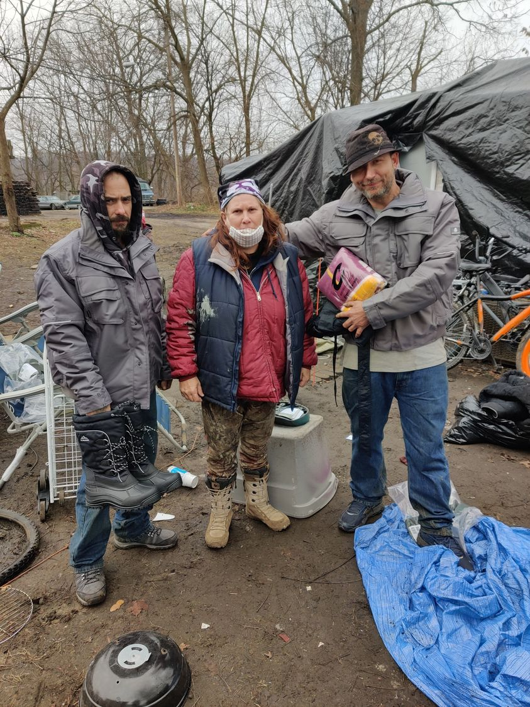

Timeline photos
This picture was taken on December 28, 2021.
The man on the left is Josh Imler. The man on the right is Rob Pierce. The woman in the middle (her name escapes me at the moment, please remind me) had just brought them these boots and that blanket.
Josh is one of the most extreme homeless people I've ever met. If it has to do with drugs and homelessness he has lived it. There were times I saw him crawl out of the woods like a half-dead zombie.
Rob is definitely not like that. He hates injection fentanyl drugs. He prefers to stay in campers and abandoned houses than tents. He's definitely homeless. But on the scale of homelessness I'd put Josh at a 10 - the most homeless you can get. Rob is like a 7 or 8.
Yet, today, Josh has been driving a flatbed tow truck for over a year. He's back with his family. He's got an apartment. Last week he had rented a 2023 BMW... probably just because he could.
Rob is still homeless.
I believe there is one clear difference. Mental illness.
Josh, while an extreme case of homelessness, does not suffer from serious mental illness... primarily schizophrenia-type disorders.
Rob does. But he doesn't believe it.
I have talked as clear as I possibly can to Rob about this. But he doesn't want to hear it. He believes what he believes and that's all there is to the subject.
I feel like I would be willing to put a bet on who will overcome their homelessness and who won't. If you have an untreated psychosis where you are seeing things and hearing things that the rest of us don't, you probably are going to live in a perpetual state of homelessness.
If you treat your mental illness or, even better, never had psychotic breaks from traditional reality, given a long enough timeline, you will eventually get tired of that life and move on. We just have to keep you alive long enough to get there.
The difference is all about mental illness.
My friend Patty has extreme anxiety which makes it very difficult for her to stay in a house. But I think that could be resolved with giving her a home and a remote camp retreat she could go to when things get too intense in the home.
Until people like Rob resolve to work on their mental health I simply can't see a path to housing... which I know is something he would like.
The reason I am picking on Rob is because his mental illness is not as extreme as other people I know. GO TO A MENTAL HEALTH PROFESSIONAL, ROB! You'll probably get a disability check which is going to make your life so much sweeter no matter where you decide to live.